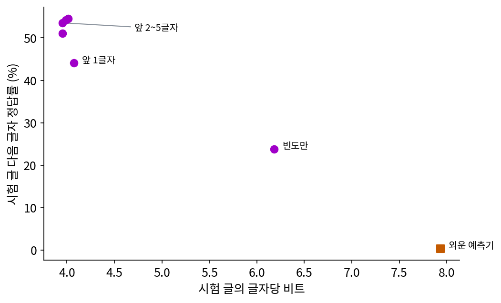
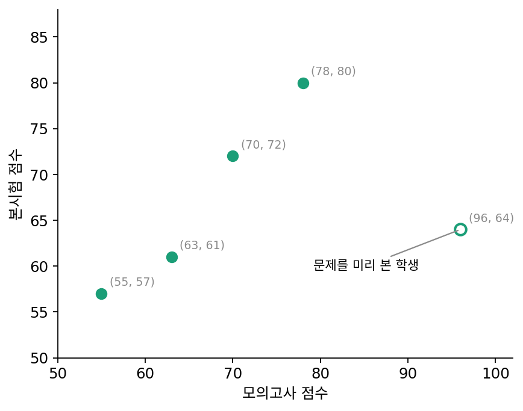
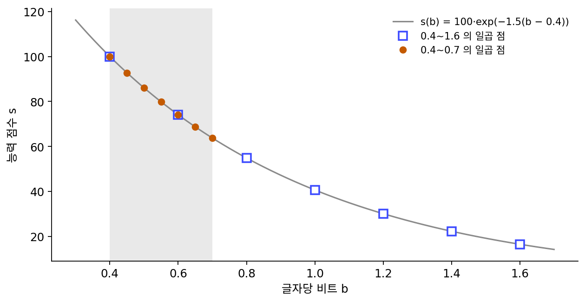
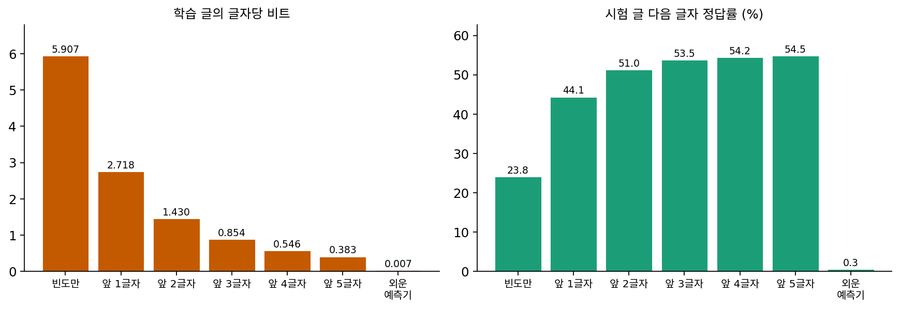

압축과 능력의 상관: 어디까지 믿을 수 있나
처음 보는 글을 잘 예측한다는 둘째 뜻의 압축은 모델의 능력과 얼마나 붙어 있을까? 손실이 낮은 모델이 시험 문제도 잘 푼다는 말은 자주 듣지만, 두 숫자는 서로 다른 것을 잰다. 바이트당 비트는 글 전체의 모든 글자를 평균한 값이고, 시험 점수는 정해진 물음에 정답을 고르는지만 본다. 둘이 늘 같이 움직인다고 믿어도 될까?
역사: 31개 모델의 직선과 그 반론
2024년 황(Yuzhen Huang)·장(Jinghan Zhang)·산(Zifei Shan)·허(Junxian He)는 「압축은 지능을 선형으로 나타낸다(Compression Represents Intelligence Linearly)」(COLM 2024)에서 압축과 능력의 관계를 숫자로 재었다. 파라미터 13억에서 720억 개까지, 여러 기관이 공개한 기본 모델(지시를 따르도록 다듬기 전의 모델) 31개를 골라 열두 가지 벤치마크(여러 모델을 같은 문제로 견주는 시험 문제 모음)의 평균 점수와 글자당 비트를 비교했다. 비트를 잴 글은 모델들이 학습했을 리 없게 새로 모았다. 지식과 상식은 2023년 9~10월의 커먼 크롤(웹 페이지를 긁어 모아 공개하는 자료), 코딩은 2023년 6~9월 깃허브의 파이썬 코드, 수학은 2023년 9~10월 arXiv 수학 논문이다. 결과는 거의 직선이었다. 두 양이 한 직선 위에 얼마나 가깝게 놓이는지를 −1 에서 1 사이로 재는 피어슨 상관이 세 분야를 합쳐 −0.93, 분야별 평균으로는 지식·상식 −0.935, 코딩 −0.937, 수학 −0.953 이었다.
저자들은 범위도 함께 적었다. 지시를 따르도록 다듬은 모델은 「더 이상 범용 압축기가 아니어서」 넣지 않았고, 능력이 아직 나타나지 않은 덜 학습된 모델에서는 맞지 않을 수 있으며, 비트를 잰 글의 분야가 벤치마크와 어긋나면(수학 벤치마크를 커먼 크롤의 비트로 재면) 상관이 약해졌다. 학습 자료에 벤치마크와 비슷한 자료가 들어 있는 것으로 보이는 모델들은 직선에서 벗어났다.
2025년 5월 쉬양(Shijie Xuyang)·뤄(Xianzhen Luo) 등 아홉 명은 「압축은 정말 코드 능력과 선형인가?(Is Compression Really Linear with Code Intelligence?)」에서 코드 쪽을 다시 재었다. 파라미터 15억에서 700억 개까지의 코드 모델들을 여러 프로그래밍 언어와 태스크(코드 생성, 고치기, 추론, 설명)에서 시험하니, 점수 자체가 아니라 점수의 로그가 비트와 직선을 이루었다(로그 공간 피어슨 상관 −0.956, 맞춘 선과 점의 평균 제곱근 오차 0.057). 나중에 고친 판(v5, 2026년 3월)에는 점수 자체에 직선을 맞추면 그 오차가 0.115 로 두 배쯤 된다는 비교가 더해졌다. 그들은 앞의 직선은 로그 곡선의 꼬리, 압축을 아주 잘하는 구간만 본 것일 수 있다고 하면서도, 지금의 맞춤 정확도로는 비트에서 능력을 정확히 계산할 수 없다고 적었다.

점수랑 비트를 모아 상관을 구하는 건 코드 한 줄이잖아요. 이게 논문이 될 일이에요?

비트를 잴 글을 고르는 데서 막혀요. 황 외는 2023년 가을의 글을 새로 모았죠. 왜 굳이 그때 글이었을까요?

음, 모델들이 학습했을 리 없는 글이어야 하니까… 31개 모델 가운데 가장 늦게 학습한 모델보다도 뒤의 글이어야겠네요.

그런데 모델마다 어느 날짜까지의 글로 학습했는지가 늘 밝혀져 있지는 않아요. 「이 날짜 뒤의 글이면 안전하다」는 선을 긋는 것부터가 짐작이에요. 벤치마크와 비슷한 자료가 섞인 듯한 모델이 직선에서 벗어났다고 저자들이 따로 적은 것도 그래서고요.

그리고 새로 모은 글도 몇 달 지나면 다음 모델들의 학습 자료에 들어가겠네요. 잣대가 시간이 지나면 낡는 거예요.
그래요. 그리고 31개는 13억에서 720억 개까지의 기본 모델이에요. 그보다 훨씬 작은 모델이나 덜 학습된 모델은 그 표에 없었죠.

그러면 그 범위 안에서 본 직선이 범위 밖에서도 직선일지는 모르는 거네요. 손으로 다 셀 수 있는 작은 예측기들로 재 보면, 비트가 낮은 쪽이 늘 더 잘 맞힐까요?
빵집 이야기로 흉내 내기
빵집 이야기의 일곱 예측기로 압축과 능력의 상관을 재 보자. 능력의 자리에는 예측기가 가장 큰 확률을 준 글자가 실제 다음 글자와 같은 비율인 「다음 글자 맞히기」를 둔다. 계산은 sources/limits/s4_corr.py.
| 예측기 | 시험 글, 글자당 비트 | 시험 글, 다음 글자 정답률 |
|---|---|---|
| 빈도만 | 6.182 | 23.8% |
| 앞 1글자 | 4.073 | 44.1% |
| 앞 2글자 | 3.955 | 51.0% |
| 앞 3글자 | 3.955 | 53.5% |
| 앞 4글자 | 3.986 | 54.2% |
| 앞 5글자 | 4.014 | 54.5% |
| 외운 예측기 | 7.934 | 0.3% |
앞 0~5글자 여섯 예측기에서 시험 글의 비트와 정답률의 피어슨 상관은 −0.956, 외운 예측기까지 일곱이면 −0.988 로, 큰 모델들에서 본 것과 비슷한 강한 상관이다. 그런데 맨 위의 순위는 갈린다. 비트는 앞 2·3글자에서 가장 낮고 앞 5글자에서 오히려 4.014 로 올라가는데, 정답률은 앞 5글자가 54.5% 로 가장 높다. 맞힐 때는 더 잘 맞히지만, 틀릴 때 더 크게 놀라는 예측기가 있기 때문이다. 그래서 상관이 −0.956 이어도 「비트가 낮은 쪽이 늘 더 잘 맞힌다」고 말할 수는 없다.

황 외가 왜 새로 모은 글로만 비트를 쟀는지도 이 흉내에서 보인다. 평가에 쓰는 글이 학습 자료에 이미 섞여 들어간 것을 자료 오염 (평가 글이 학습 자료에 들어가 있어 점수가 부풀려지는 것, data contamination)이라 한다. 외운 예측기는 오염의 가장 극단적인 꼴이어서, 학습 글로 비트를 재면 0.007비트로 1등이지만 처음 보는 글에서는 꼴찌다. 오염된 글로 재면 압축과 능력의 관계가 어떻게 되는지는 아래 문제 11에서 직접 계산한다.
ML에서: 왜 기본 모델만 넣었을까?
황 외가 지시를 따르게 다듬은 모델을 뺀 것은 의미가 크다. 사람이 좋아하는 답을 내도록 다듬은 모델은 대화나 시험에서 더 쓸모 있게 답하지만, 인터넷 글 전체를 예측하는 둘째 뜻의 압축은 오히려 나빠질 수 있다. 「압축을 잘한다」와 「쓸모 있게 답한다」가 서로 다른 방향을 가리키는 자리가 있다는 뜻이고, 「관측을 아무리 짧게 적어도 무엇을 해야 하는지는 정해지는가」라는 물음으로 이어진다.
문제 9. 모의고사와 본시험
학생 다섯 명의 모의고사 점수가 55, 63, 70, 78, 96점이고, 같은 다섯 명의 본시험 점수는 57, 61, 72, 80, 64점이다. 모의고사 96점인 학생은 모의고사 문제를 미리 구해 보았다. (가) 다섯 명 전체에서 두 점수의 피어슨 상관은? (나) 미리 본 학생을 빼면? (다) 무엇을 배울 수 있는가?

계산기로 돌리면 다섯 명은 0.381, 넷이면 0.983이에요. 한 명 때문에 이렇게 바뀌어요?
그 한 명의 모의고사 점수는 무엇을 잰 걸까요?

실력이 아니라 문제를 미리 봤는지를 잰 거네요. 그 점수만 엉뚱한 걸 재고 있으니까 직선에서 혼자 떨어졌어요.
그러면 모의고사가 본시험을 잘 예측하는 건 「문제를 처음 본다」는 조건이 있을 때뿐이야. 조건이 깨진 사람을 섞으면 상관이 무너지고.

통계 수업에서 이상점 하나가 상관계수를 크게 흔든다고 배웠는데, 이건 이상점이 아니라 다른 걸 잰 점이네.
문제 10. 로그 곡선의 꼬리
어떤 능력 점수가 글자당 비트 b 에 대해 s(b) = 100·exp(−1.5(b − 0.4)) 로 정해진다고 하자(모양을 보기 위해 지어낸 곡선이다). b = 0.4 부터 0.7 까지, 그리고 0.4 부터 1.6 까지 고르게 일곱 점을 찍는다. (가) 두 구간에서 점수에 직선을 맞추면 점과 직선의 가장 큰 차이와 상관은? (나) 점수의 로그에 직선을 맞추면? (다) 앞의 직선과 로그 관계라는 반론이 함께 맞을 수 있는가?

0.4~0.7 은 점수가 100, 92.8, 86.1, 79.9, 74.1, 68.7, 63.8 이고 직선을 맞추면 기울기 −120.6, 점과 직선의 가장 큰 차이 1.16점, 상관 −0.998 이에요. 거의 완벽한 직선이니까, 점수는 비트에 대해 직선으로 줄어드는 거네요.
같은 곡선에서 b 를 1.6 까지 넓혀 찍어도 직선이라고 할 수 있을까요?
0.4~1.6 은 100 에서 16.5 까지 떨어지고, 직선을 맞추면 점과 직선의 가장 큰 차이가 11.06점이에요. 좁은 구간의 1.16점보다 열 배 가까이 커졌는데, 상관은 −0.969 로 여전히 높아요. 상관만 보면 아직 직선 같은데요.
이상하다. 곡선은 하나인데 구간을 넓혔다고 직선이 안 맞게 됐어. 애초에 식이 지수 함수잖아.
그럼 (나)처럼 점수의 로그를 취하면 식이 어떻게 되나요?

ln s = ln 100 − 1.5(b − 0.4)… b 에 대한 직선이에요. 점수의 로그는 정확히 직선이네요.
돌려 보니까 점과 직선의 차이가 컴퓨터 반올림 정도(10⁻¹⁵)뿐이에요.
그럼 좁은 구간에서 민준 학생이 본 직선은 틀린 관찰이었나요?
아니요. 좁은 구간에서는 지수 곡선도 거의 직선이에요. 테일러 전개의 첫 항만 보는 거랑 같아요. 압축을 잘하는 모델만 모아 보면 직선이 보이고, 넓게 보면 로그 관계가 드러나니까 둘 다 맞을 수 있어요.

그래요. 상관계수가 −0.97 이어도 점과 직선의 차이가 11점일 수 있어요. 상관이 높다는 것과 어떤 꼴의 식이 맞는다는 것은 다른 이야기예요.

실험 보고서에 점 몇 개 찍고 「선형이다」라고 썼다가 조교님한테 측정 범위를 넓혀 보라는 코멘트를 받은 적이 있어요.
문제 11. 학습 글로 비트를 재면
빵집 이야기의 일곱 예측기를 학습 글로 잰 글자당 비트는 빈도만 5.907, 앞 1글자 2.718, 앞 2글자 1.430, 앞 3글자 0.854, 앞 4글자 0.546, 앞 5글자 0.383, 외운 예측기 0.007 이다. 시험 글의 정답률은 본문의 표와 같다. (가) 학습 글 비트와 시험 글 정답률의 피어슨 상관을 앞 0~5글자 여섯으로, 그리고 일곱 모두로 구하라. (나) 무엇이 달라졌는가? (다) 큰 언어 모델의 압축률을 잴 글로 「위키백과 옛 덤프」를 쓰면 어떤 일이 생길 수 있는가?

여섯으로는 −0.996, 일곱이면 −0.183이에요. 여섯일 땐 시험 글로 잰 −0.956 보다 오히려 더 높네요. 그럼 학습 글로 재도 되는 거 아니에요?
여섯 예측기는 모두 같은 방식으로, 같은 학습 글로 표를 만든 것들이죠. 거기에 외운 예측기 하나를 넣으니 어떻게 됐나요?
−0.183 이면 상관이 거의 없는 거예요. 외운 예측기 하나가 학습 글 비트로는 1등이고 정답률은 꼴찌니까. 여섯끼리 상관이 높았던 건 같은 집안끼리 비교해서였어요. 다른 방식으로 만든 모델이 섞이면 학습 글 비트는 아무것도 보장하지 않아요.

(다)는 위키백과 옛 덤프는 거의 모든 모델이 학습했을 테니까, 그 글을 많이 외운 모델일수록 비트가 낮게 나오겠네요. 그럼 압축률이 실력이 아니라 「위키백과를 얼마나 외웠나」를 재게 되고요. 그래서 황 외가 2023년 가을 글을 새로 모았구나.

그래요. 문제 9의 모의고사를 미리 본 학생과 같은 자리예요. 비트를 잴 글이 처음 보는 글이어야 둘째 뜻의 압축이 돼요.
과제 채점할 때 작년 답안을 그대로 낸 걸 걸러 내지 않으면 점수가 실력을 못 재는 거랑 같네요. 작년 답안이 위키백과 옛 덤프고요.